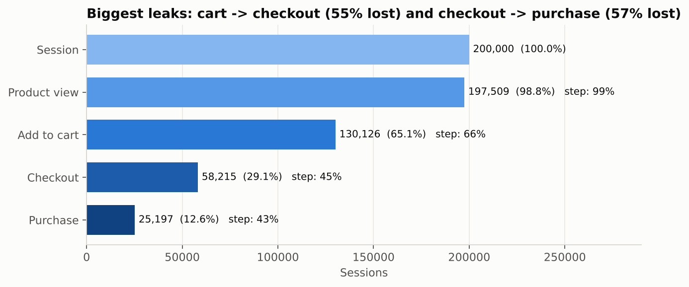
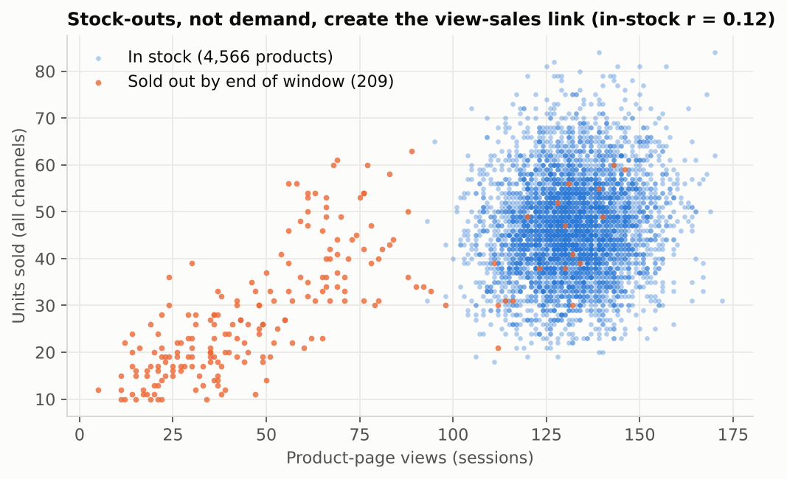
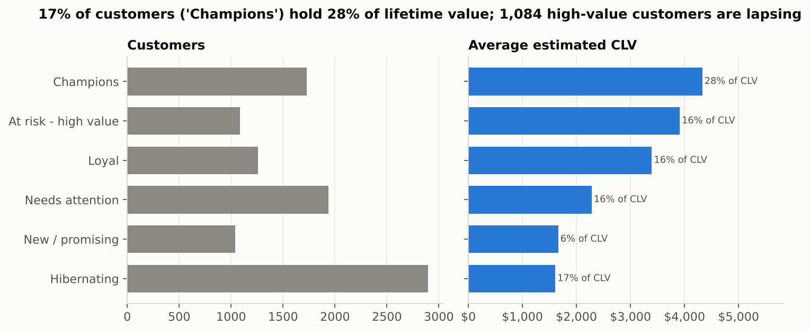
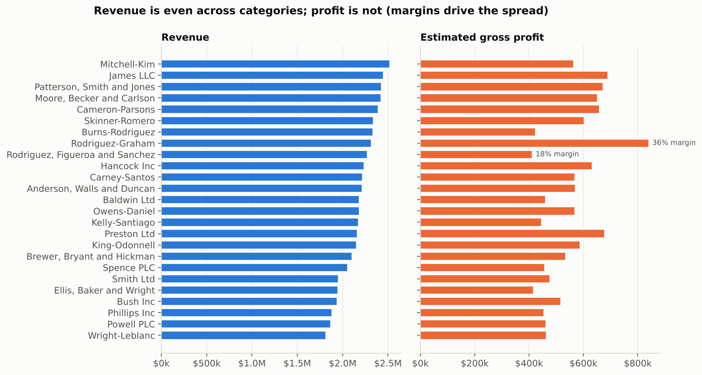
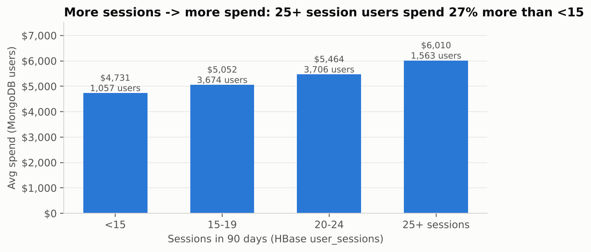
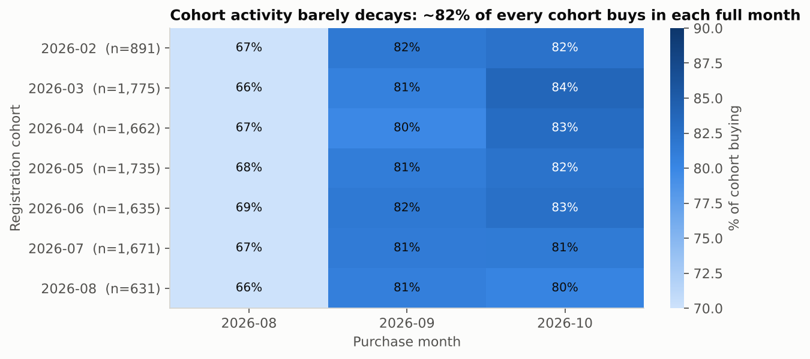
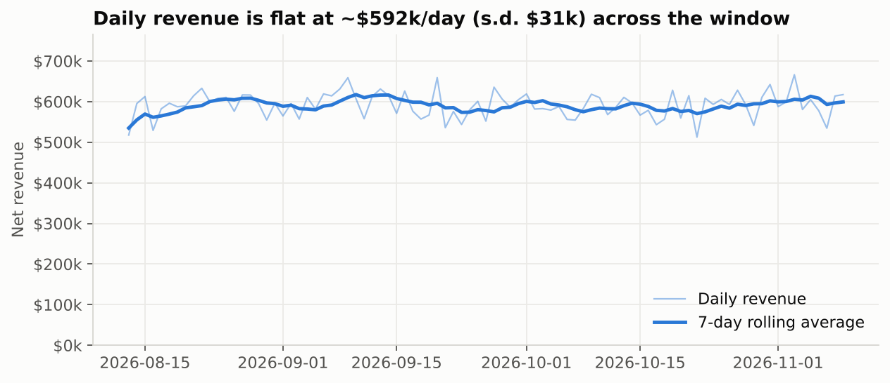

This project builds a polyglot analytics platform for a synthetic e-commerce business: MongoDB holds the
document-shaped business entities (catalogue, customers, orders), HBase holds the high-volume, time-ordered
click-stream and daily product metrics, and Apache Spark cleans the raw data, runs the heavy batch analytics
and joins across both stores. All numbers below come from a reproducible run of the pipeline (seed 42, scale 0.1:
10,000 users, 5,000 products, 200,000 sessions, 50,000 transactions, 90 days; ./run_all.sh).
Raw JSON is loaded into the two operational stores by Python loaders and, in parallel, into Spark which writes a
clean Parquet "lake". Analytical jobs read through a single access layer (integration/sources.py)
that returns identical DataFrames whether the data comes from Parquet, MongoDB (via an aggregation pipeline pushed
down to the server) or HBase (via Thrift prefix/range scans). This keeps the analysis code independent of storage and
lets every result be reproduced on a laptop without servers (--offline mode uses mongomock and a
SQLite-backed HBase emulator that preserves sorted row-key semantics).
The simulation logic is unchanged; four engineering fixes were needed: (1) products now receive the
subcategory_id that the brief's data dictionary shows but the original never assigned; (2) sessions are
streamed to sessions_N.json in 100k chunks instead of being held in memory (the original needs >10 GB RAM at
2M sessions); (3) IDs come from the seeded RNG instead of uuid4, making runs reproducible; (4) a
--scale flag. Full scale (2M sessions, ~4 GB) generates in about 4 minutes.
| Collection | Shape | Pattern & justification |
|---|---|---|
| categories | category + subcategories[] (3-5) with profit_margin | Embedding: small, bounded, always read together; one read returns the whole hierarchy. |
| products | product + category{id,name} + subcategory{id,name,profit_margin} + price_history[] | Extended reference: copies the rarely-changing names/margin so catalogue pages and margin maths need no $lookup. Price history is bounded (1-3 points) so it is embedded. |
| transactions | order header + items[], each item with product_name, category_id, subcategory_id; timestamp as BSON Date | Line items live and die with the order (atomic single-document writes). Denormalised category ids make revenue-by-category a pure $unwind/$group. |
| users | profile + geo + purchase_summary{total_spent, order_count, avg_order_value, favorite_category, recent_orders[5]} | Computed + subset pattern: the most-requested facts are pre-aggregated; full history stays in transactions (unbounded arrays are avoided). |
| sessions (sample) | full journey with page_views[] and cart_contents[] | Shows the "whole journey in one document" query; the complete click-stream lives in HBase. |
Indexes back each query pattern: {user_id:1, timestamp:-1} (order history), {timestamp:1}
(period revenue), multikey {items.product_id:1} (product sales), {purchase_summary.total_spent:-1}
(top customers) and {category.category_id:1, is_active:1} (catalogue browsing). Four aggregation
pipelines are implemented (mongodb/aggregations.py and .js): (1) top-selling products with
$unwind→$group→$lookup for current stock; (2) revenue and estimated profit per category per month,
matching each item to its embedded subcategory margin with $filter; (3) user segmentation by purchase frequency
and spend with $facet + $bucket in a single round trip (e.g. 3,550 users with 6-9 orders spend $7,351 on average,
313 users with 10+ orders spend $11,449); (4) a journey funnel over the embedded page_views array by referrer.
| Table | Row key | Column families | Access patterns served |
|---|---|---|---|
| user_sessions | user_id|reverse_ts|session_idreverse_ts = 9999999999999 − epoch_ms | info: session header (15 cells) pv: one column per page view, qualifier 000..015cart: qualifier = product_id, value qty|price | Latest N sessions of a user = prefix scan, newest first; sessions in a time window = bounded STARTROW/STOPROW scan; one session = point get. |
| product_metrics | product_id|yyyymmdd | m: views, cart_adds, purchases, units_sold, revenue_cents | A product's daily history or a date range is one contiguous scan; streaming updates use atomic incr counters. |
Why this design. Placing user_id first makes a user's activity contiguous on disk; reversing the timestamp
makes "most recent activity" the first rows returned, so no sort is needed. Column families are split by access pattern:
listing sessions reads only the small info family, while the larger, variable-width pv family (3-15 cells)
is read only when a journey is drilled into. Sparse columns cost nothing: most sessions have 0-2 cart cells.
VERSIONS=1 (events are immutable), a ROW bloom filter for point gets, a 180-day TTL on pv, and pre-split
regions on user-id ranges complete the schema (hbase/create_tables.hbase). The load wrote 200,000 session rows and
355,305 product-day rows; hbase/query_hbase.py and sample_queries.hbase demonstrate five queries, e.g.:
scan 'user_sessions', {ROWPREFIXFILTER => 'user_000042|', COLUMNS => ['info'], LIMIT => 5}
scan 'user_sessions', {STARTROW => 'user_000042|8209187200000', STOPROW => 'user_000042|8211779199999~'} # Sept 2026
scan 'product_metrics', {STARTROW => 'prod_00123|20260901', STOPROW => 'prod_00123|20261001'}
| Criterion | MongoDB | HBase |
|---|---|---|
| Data | Entities with rich nested structure and modest volume (catalogue, customers, orders) | Append-only events at very high volume (2M sessions, ~20M page views at full scale), daily counters |
| Queries | Ad-hoc filters, secondary indexes, aggregation framework, $lookup | Known access path by key: per-user timelines, per-product time ranges |
| Schema | Flexible documents, validation per collection | Sparse, variable columns per row; row-key design is the "index" |
| Writes | Transactional per document (an order and its items together) | Massive write throughput, atomic counters, region auto-sharding |
01_clean_normalize.py reads every JSON file (sessions via the glob sessions_*.json) with explicit
schemas - avoiding a second inference pass over the multi-GB session files and type drift - and writes nine Parquet tables:
users, categories (hierarchy flattened to one row per subcategory), products (joined with margin), price_history,
sessions (partitioned by date, with funnel flags), page_views (exploded with posexplode, partitioned by date),
cart_items (the cart_contents object is read as a MapType and exploded), transactions (with reconciliation
flags) and transaction_items (discount pro-rated per line, enriched with category and margin via a broadcast join).
Rules applied: de-duplication on keys, dropping rows with missing keys or unparseable timestamps, trimming and
case-normalising enums and geo codes, clamping negatives, filling missing descriptive values, repairing
conversion_status ("abandoned" with an empty cart → "browsed") and flagging - not dropping - logical
inconsistencies. Every check is counted in output/data_quality_report.csv. The generated data proved
structurally clean (0 duplicates, 0 orphans, 0 total mismatches); the one material issue was the 15,552 converted sessions
without an order.
02_recommendations.py computes association rules (support, confidence, lift, top-5 per product via a window)
for "bought together" (self-join on transaction id with x < y) and "viewed together" (pairs built inside
each session's viewed_products array with higher-order functions transform/filter, which avoids a
shuffle-heavy join), plus category-level affinity. 03_cohort_analysis.py groups users by registration month and
tracks buyers, revenue, retention and cumulative revenue per member by months since registration.
04_spark_sql_analytics.py runs five complex SQL queries - top-3 products per category (CTE + RANK),
funnel by device/referrer with ROLLUP, daily revenue with a 7-day RANGE window and week-over-week
LAG, price-change impact using MAX_BY over exploded price history, and viewed-vs-sold ranks - and a
Part B where views shaped exactly like MongoDB documents (mongo_users with a nested
purchase_summary, mongo_transactions with an items array queried through
LATERAL VIEW explode, Spark's $unwind) and HBase rows (rowkey + info:* columns, user id parsed with
SPLIT(rowkey,'\\|')) are joined in SQL.
Optimisations considered: explicit schemas; Parquet + Snappy with date partitioning (partition pruning for time-range
queries); broadcast joins for the 5,000-product and 109-subcategory dimensions; adaptive query execution (coalescing
shuffle partitions); cache() only for DataFrames reused several times; array functions instead of joins for
co-occurrence; and a minimum pair count to prune the long tail before ranking.
integration/clv_analysis.pyBusiness question: which customers are worth most over their expected lifetime, how engaged are they, and
which segment should get retention spend? Sources: user profiles and orders from MongoDB (the
$unwind and discount pro-ration are pushed into the aggregation pipeline so only line-item rows cross the
network), session engagement from HBase user_sessions (frequency, duration, pages, cart rate), margins
from the category dimension. Spark steps: per-user purchase facts; per-user engagement facts; monthly buyer
retention estimated from the data (r = 0.825 ⇒ expected lifetime 1/(1−r) = 5.7 months); CLV = AOV ×
orders per month × gross-margin % × lifetime; RFM quintiles (NTILE) mapped to named segments and CLV quartile tiers.
| Segment | Users | Avg CLV | Share of CLV | Avg recency (days) | Sessions | Session→order rate |
|---|---|---|---|---|---|---|
| Champions | 1,727 | $4,187 | 27.9% | 4.1 | 21.1 | 17.2% |
| At risk - high value | 1,079 | $3,770 | 15.7% | 27.0 | 20.2 | 14.3% |
| Loyal | 1,274 | $3,289 | 16.2% | 9.7 | 21.1 | 17.9% |
| Needs attention | 1,920 | $2,209 | 16.4% | 9.2 | 19.6 | 10.9% |
| New / promising | 1,048 | $1,607 | 6.5% | 4.6 | 19.0 | 9.1% |
| Hibernating | 2,901 | $1,555 | 17.4% | 35.2 | 19.4 | 9.5% |
Platinum-tier customers (top CLV quartile) average 20.9 sessions and a 16.2% session-to-order rate versus 19.3 and 9.0% for Bronze: value is driven by conversion efficiency far more than by browsing time (correlation of CLV with average session duration is 0.02, with session count 0.13).
integration/funnel_analysis.pyBusiness question: where are shoppers lost, does it differ by device, traffic source or category, and what is
the leak worth? Sources: journey stages from HBase user_sessions (pv and cart families),
category views and cart adds from HBase product_metrics, and purchases from MongoDB transactions as the
source of truth for the last stage. Spark steps: scan → per-session stage flags → left join to orders on
session_id → stage counts and step conversion; the same by device, referrer, category (views × web purchases) and
week. The 7-step page-flow is visible in the numbers (Figure 1): 66% add to cart, 45% of carts reach checkout, 43% of
checkouts become orders. Device and referrer differences are within ±0.3 percentage points (12.3-12.8% purchase rate),
and category view-to-cart rates span only 29.4-30.6%: in this dataset the leak is a process problem (checkout),
not a channel or assortment problem.
Performance considerations. Through the driver (pymongo/happybase) the integration scans 200k session rows in a
few seconds; at full scale the HBase read should use the hbase-spark connector or a snapshot export so that regions are
read in parallel by executors, and MongoDB should be read with the Spark connector (partitioned by _id) with
filters/aggregations pushed down. Joins are on high-cardinality keys (user_id, session_id) with dimension tables broadcast.







product_metrics daily views and units to trigger re-orders; sold-out items lose ~60% of their visibility.Funnel: a session reaches a stage if its page sequence contains it; "Checkout" additionally requires a non-empty cart; "Purchase" requires a transaction with that session_id. CLV: a simple, explainable retention-based model; partial first/last months are excluded when estimating retention and lifetime is capped at 36 months. RFM: quintiles computed over buyers only. Recommendations: lift = confidence / P(consequent). Cohorts: months since registration use calendar-month differences; edge months (early Aug, 1 Nov) are partial.
| Task | Technology | Why | Scaling path |
|---|---|---|---|
| Catalogue, customer profile, order look-ups | MongoDB | Nested documents, secondary indexes, aggregation framework | Shard transactions on {user_id: "hashed"} (even writes, user-local history); replica sets for reads |
| Click-stream, user timelines, product time series | HBase | Key-ordered storage, sparse wide rows, very high write rate, counters | Regions split automatically; pre-split and, if write hot-spots appear, salt the key with hash(user_id)%N |
| Cleaning, co-occurrence, cohorts, CLV, cross-store joins | Spark | Distributed, in-memory, SQL + DataFrame APIs, reads all sources | Run on YARN/Kubernetes; Parquet partitioning; connectors read in parallel; Structured Streaming for live counters |
The pipeline is linear in data volume: at full scale (10×) the generator produces ~4 GB of JSON; the Spark jobs need only the shuffle-partition setting raised. The pair-generation step is the only super-linear component (O(k²) per basket/session) and is bounded by the 15-page session cap. In production, session events would arrive through Kafka, be written to HBase with counter increments by a Spark Structured Streaming job, and be compacted nightly into Parquet.
docker compose up -d, then ./run_all.sh); the emulator mimics row-key ordering but not regions, versions or compression.pip install -r requirements.txt docker compose up -d # MongoDB 7 + HBase (Thrift on 9090) ./run_all.sh # live mode (or: ./run_all.sh --offline) SCALE=1.0 ./run_all.sh # full 2M-session dataset